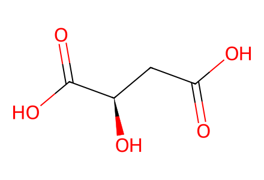
O=C(O)C[C@@H](O)C(=O)OMain Schemes 1-4 and SI preparation section pp5-25, including malic-acid-derived building blocks, recovered diastereomer inversion, acetal characterization branches and both C11 epimer routes. Nonisolated activated esters, tosylates and unprotected propargylic mixtures remain explicit operation stages unless a separately drawn numbered species is available. New benzylidene acetal configurations in control products 9a/9b remain unassigned pending independent drawing review. Facts compiled deterministically; independent review pending.
完整 JSON · 逐步 CSV · 路线序列 · SDF · HRMS 核对
| 事件 | 分子连接 | 报告产率 | Canonical reaction SMILES |
|---|---|---|---|
| E01 | D-malic-acid → R-21 | not reported | O=C(O)C[C@@H](O)C(=O)O>>OCC[C@@H](O)CO |
| E02 | R-21 → R-22 | R-22: 74% | OCC[C@@H](O)CO>>CC1(C)OC[C@@H](CCO)O1 |
| E03 | R-22 → R-5 | R-5: 88% | CC1(C)OC[C@@H](CCO)O1>>CC1(C)OC[C@@H](CC=O)O1 |
| E04 | L-malic-acid → S-21 | not reported | O=C(O)C[C@H](O)C(=O)O>>OCC[C@H](O)CO |
| E05 | S-21 → S-22 | not reported | OCC[C@H](O)CO>>CC1(C)OC[C@H](CCO)O1 |
| E06 | S-22 → S-5 | not reported | CC1(C)OC[C@H](CCO)O1>>CC1(C)OC[C@H](CC=O)O1 |
| E07 | R-5 + butenyl-MgBr → 6a + 6b | 6a: 40.2%; 6b: 25.8% | C=CC[CH2][Mg][Br].CC1(C)OC[C@@H](CC=O)O1>>C=CCC[C@@H](O)C[C@@H]1COC(C)(C)O1.C=CCC[C@H](O)C[C@@H]1COC(C)(C)O1 |
| E08 | 6b → 6a | 6a: 82% | C=CCC[C@@H](O)C[C@@H]1COC(C)(C)O1>>C=CCC[C@H](O)C[C@@H]1COC(C)(C)O1 |
| E09 | 6a → 7a | not reported | C=CCC[C@H](O)C[C@@H]1COC(C)(C)O1>>C=CCC[C@@H](C[C@@H]1COC(C)(C)O1)OCc1ccc(OC)cc1 |
| E10 | 7a → 8a | 8a: 94% | C=CCC[C@@H](C[C@@H]1COC(C)(C)O1)OCc1ccc(OC)cc1>>C=CCC[C@@H](C[C@@H](O)CO)OCc1ccc(OC)cc1 |
| E11 | 6b → 7b | not reported | C=CCC[C@@H](O)C[C@@H]1COC(C)(C)O1>>C=CCC[C@H](C[C@@H]1COC(C)(C)O1)OCc1ccc(OC)cc1 |
| E12 | 7b → 8b | 8b: 88% | C=CCC[C@H](C[C@@H]1COC(C)(C)O1)OCc1ccc(OC)cc1>>C=CCC[C@H](C[C@@H](O)CO)OCc1ccc(OC)cc1 |
| E13 | 8a → 9a | 9a: 34% | C=CCC[C@@H](C[C@@H](O)CO)OCc1ccc(OC)cc1>>C=CCC[C@H]1C[C@H](CO)OC(c2ccc(OC)cc2)O1 |
| E14 | 8b → 9b | 9b: 80% | C=CCC[C@H](C[C@@H](O)CO)OCc1ccc(OC)cc1>>C=CCC[C@@H]1C[C@H](CO)OC(c2ccc(OC)cc2)O1 |
| E15 | 8a → 3 | 3: 87% | C=CCC[C@@H](C[C@@H](O)CO)OCc1ccc(OC)cc1>>C=CCC[C@@H](C[C@@H]1CO1)OCc1ccc(OC)cc1 |
| E16 | S-5 + ethynyl-MgBr → 4 | 82% combined mixture yield | C#[C][Mg][Br].CC1(C)OC[C@H](CC=O)O1>>C#CC(C[C@H]1COC(C)(C)O1)O[Si](C)(C)C(C)(C)C |
| E17 | 3 + 4 → 10 | 96% combined mixture yield | C#CC(C[C@H]1COC(C)(C)O1)O[Si](C)(C)C(C)(C)C.C=CCC[C@@H](C[C@@H]1CO1)OCc1ccc(OC)cc1>>C=CCC[C@@H](C[C@@H](O)CC#CC(C[C@H]1COC(C)(C)O1)O[Si](C)(C)C(C)(C)C)OCc1ccc(OC)cc1 |
| E18 | 10 → 11 | 96% combined mixture yield | C=CCC[C@@H](C[C@@H](O)CC#CC(C[C@H]1COC(C)(C)O1)O[Si](C)(C)C(C)(C)C)OCc1ccc(OC)cc1>>C=CCC[C@@H](C[C@H](CC#CC(C[C@H]1COC(C)(C)O1)O[Si](C)(C)C(C)(C)C)OCc1ccc(OC)cc1)OCc1ccc(OC)cc1 |
| E19 | 11 → 13-mixture | not reported | C=CCC[C@@H](C[C@H](CC#CC(C[C@H]1COC(C)(C)O1)O[Si](C)(C)C(C)(C)C)OCc1ccc(OC)cc1)OCc1ccc(OC)cc1>>C=CCC[C@@H](C[C@H](CC#CC(O)C[C@H]1COC(C)(C)O1)OCc1ccc(OC)cc1)OCc1ccc(OC)cc1 |
| E20 | 13-mixture → 12 | 12: 90% | C=CCC[C@@H](C[C@H](CC#CC(O)C[C@H]1COC(C)(C)O1)OCc1ccc(OC)cc1)OCc1ccc(OC)cc1>>C=CCC[C@@H](C[C@H](CC#CC(=O)C[C@H]1COC(C)(C)O1)OCc1ccc(OC)cc1)OCc1ccc(OC)cc1 |
| E21 | 12 → 13a | 13a: 89% | C=CCC[C@@H](C[C@H](CC#CC(=O)C[C@H]1COC(C)(C)O1)OCc1ccc(OC)cc1)OCc1ccc(OC)cc1>>C=CCC[C@@H](C[C@H](CC#C[C@H](O)C[C@H]1COC(C)(C)O1)OCc1ccc(OC)cc1)OCc1ccc(OC)cc1 |
| E22 | 12 → 13b | 13b: 87% | C=CCC[C@@H](C[C@H](CC#CC(=O)C[C@H]1COC(C)(C)O1)OCc1ccc(OC)cc1)OCc1ccc(OC)cc1>>C=CCC[C@@H](C[C@H](CC#C[C@@H](O)C[C@H]1COC(C)(C)O1)OCc1ccc(OC)cc1)OCc1ccc(OC)cc1 |
| E23 | 13a → 14a | 14a: 90% | C=CCC[C@@H](C[C@H](CC#C[C@H](O)C[C@H]1COC(C)(C)O1)OCc1ccc(OC)cc1)OCc1ccc(OC)cc1>>C=CCC[C@@H](C[C@H](C/C=C/[C@H](O)C[C@H]1COC(C)(C)O1)OCc1ccc(OC)cc1)OCc1ccc(OC)cc1 |
| E24 | 13b → 14b | 14b: 92% | C=CCC[C@@H](C[C@H](CC#C[C@@H](O)C[C@H]1COC(C)(C)O1)OCc1ccc(OC)cc1)OCc1ccc(OC)cc1>>C=CCC[C@@H](C[C@H](C/C=C/[C@@H](O)C[C@H]1COC(C)(C)O1)OCc1ccc(OC)cc1)OCc1ccc(OC)cc1 |
| E25 | 14a → 15a | 15a: 93% | C=CCC[C@@H](C[C@H](C/C=C/[C@H](O)C[C@H]1COC(C)(C)O1)OCc1ccc(OC)cc1)OCc1ccc(OC)cc1>>C=CCC[C@@H](C[C@H](C/C=C/[C@@H](C[C@H]1COC(C)(C)O1)OCc1ccc(OC)cc1)OCc1ccc(OC)cc1)OCc1ccc(OC)cc1 |
| E26 | 14b → 15b | 15b: 92% | C=CCC[C@@H](C[C@H](C/C=C/[C@@H](O)C[C@H]1COC(C)(C)O1)OCc1ccc(OC)cc1)OCc1ccc(OC)cc1>>C=CCC[C@@H](C[C@H](C/C=C/[C@H](C[C@H]1COC(C)(C)O1)OCc1ccc(OC)cc1)OCc1ccc(OC)cc1)OCc1ccc(OC)cc1 |
| E27 | 15a + styrene → 16a | 16a: 79% | C=CCC[C@@H](C[C@H](C/C=C/[C@@H](C[C@H]1COC(C)(C)O1)OCc1ccc(OC)cc1)OCc1ccc(OC)cc1)OCc1ccc(OC)cc1.C=Cc1ccccc1>>COc1ccc(CO[C@@H](C/C=C/[C@@H](C[C@H]2COC(C)(C)O2)OCc2ccc(OC)cc2)C[C@H](CC/C=C/c2ccccc2)OCc2ccc(OC)cc2)cc1 |
| E28 | 15b + styrene → 16b | 16b: 77% | C=CCC[C@@H](C[C@H](C/C=C/[C@H](C[C@H]1COC(C)(C)O1)OCc1ccc(OC)cc1)OCc1ccc(OC)cc1)OCc1ccc(OC)cc1.C=Cc1ccccc1>>COc1ccc(CO[C@@H](C/C=C/[C@H](C[C@H]2COC(C)(C)O2)OCc2ccc(OC)cc2)C[C@H](CC/C=C/c2ccccc2)OCc2ccc(OC)cc2)cc1 |
| E29 | 16a → 17a | 17a: 89% | COc1ccc(CO[C@@H](C/C=C/[C@@H](C[C@H]2COC(C)(C)O2)OCc2ccc(OC)cc2)C[C@H](CC/C=C/c2ccccc2)OCc2ccc(OC)cc2)cc1>>COc1ccc(CO[C@@H](C/C=C/[C@@H](C[C@H](O)CO)OCc2ccc(OC)cc2)C[C@H](CC/C=C/c2ccccc2)OCc2ccc(OC)cc2)cc1 |
| E30 | 16b → 17b | 17b: 88% | COc1ccc(CO[C@@H](C/C=C/[C@H](C[C@H]2COC(C)(C)O2)OCc2ccc(OC)cc2)C[C@H](CC/C=C/c2ccccc2)OCc2ccc(OC)cc2)cc1>>COc1ccc(CO[C@@H](C/C=C/[C@H](C[C@H](O)CO)OCc2ccc(OC)cc2)C[C@H](CC/C=C/c2ccccc2)OCc2ccc(OC)cc2)cc1 |
| E31 | 17a → 2a | 2a: 90% | COc1ccc(CO[C@@H](C/C=C/[C@@H](C[C@H](O)CO)OCc2ccc(OC)cc2)C[C@H](CC/C=C/c2ccccc2)OCc2ccc(OC)cc2)cc1>>COc1ccc(CO[C@@H](C/C=C/[C@@H](C[C@H]2CO2)OCc2ccc(OC)cc2)C[C@H](CC/C=C/c2ccccc2)OCc2ccc(OC)cc2)cc1 |
| E32 | 17b → 2b | 2b: 88% | COc1ccc(CO[C@@H](C/C=C/[C@H](C[C@H](O)CO)OCc2ccc(OC)cc2)C[C@H](CC/C=C/c2ccccc2)OCc2ccc(OC)cc2)cc1>>COc1ccc(CO[C@@H](C/C=C/[C@H](C[C@H]2CO2)OCc2ccc(OC)cc2)C[C@H](CC/C=C/c2ccccc2)OCc2ccc(OC)cc2)cc1 |
| E33 | 2a + methyl-propiolate → 18a | 18a: 92% | C#CC(=O)OC.COc1ccc(CO[C@@H](C/C=C/[C@@H](C[C@H]2CO2)OCc2ccc(OC)cc2)C[C@H](CC/C=C/c2ccccc2)OCc2ccc(OC)cc2)cc1>>COC(=O)C#CC[C@@H](O)C[C@H](/C=C/C[C@@H](C[C@H](CC/C=C/c1ccccc1)OCc1ccc(OC)cc1)OCc1ccc(OC)cc1)OCc1ccc(OC)cc1 |
| E34 | 2b + methyl-propiolate → 18b | 18b: 91% | C#CC(=O)OC.COc1ccc(CO[C@@H](C/C=C/[C@H](C[C@H]2CO2)OCc2ccc(OC)cc2)C[C@H](CC/C=C/c2ccccc2)OCc2ccc(OC)cc2)cc1>>COC(=O)C#CC[C@@H](O)C[C@@H](/C=C/C[C@@H](C[C@H](CC/C=C/c1ccccc1)OCc1ccc(OC)cc1)OCc1ccc(OC)cc1)OCc1ccc(OC)cc1 |
| E35 | 18a → 19a | 19a: 90% | COC(=O)C#CC[C@@H](O)C[C@H](/C=C/C[C@@H](C[C@H](CC/C=C/c1ccccc1)OCc1ccc(OC)cc1)OCc1ccc(OC)cc1)OCc1ccc(OC)cc1>>COC(=O)/C=C\C[C@@H](O)C[C@H](/C=C/C[C@@H](C[C@H](CC/C=C/c1ccccc1)OCc1ccc(OC)cc1)OCc1ccc(OC)cc1)OCc1ccc(OC)cc1 |
| E36 | 18b → 19b | 19b: 92% | COC(=O)C#CC[C@@H](O)C[C@@H](/C=C/C[C@@H](C[C@H](CC/C=C/c1ccccc1)OCc1ccc(OC)cc1)OCc1ccc(OC)cc1)OCc1ccc(OC)cc1>>COC(=O)/C=C\C[C@@H](O)C[C@@H](/C=C/C[C@@H](C[C@H](CC/C=C/c1ccccc1)OCc1ccc(OC)cc1)OCc1ccc(OC)cc1)OCc1ccc(OC)cc1 |
| E37 | 19a → 20a | 20a: 94% | COC(=O)/C=C\C[C@@H](O)C[C@H](/C=C/C[C@@H](C[C@H](CC/C=C/c1ccccc1)OCc1ccc(OC)cc1)OCc1ccc(OC)cc1)OCc1ccc(OC)cc1>>COc1ccc(CO[C@@H](C/C=C/[C@@H](C[C@H]2CC=CC(=O)O2)OCc2ccc(OC)cc2)C[C@H](CC/C=C/c2ccccc2)OCc2ccc(OC)cc2)cc1 |
| E38 | 19b → 20b | 20b: 91% | COC(=O)/C=C\C[C@@H](O)C[C@@H](/C=C/C[C@@H](C[C@H](CC/C=C/c1ccccc1)OCc1ccc(OC)cc1)OCc1ccc(OC)cc1)OCc1ccc(OC)cc1>>COc1ccc(CO[C@@H](C/C=C/[C@H](C[C@H]2CC=CC(=O)O2)OCc2ccc(OC)cc2)C[C@H](CC/C=C/c2ccccc2)OCc2ccc(OC)cc2)cc1 |
| E39 | 20a → 1a | 1a: 67% | COc1ccc(CO[C@@H](C/C=C/[C@@H](C[C@H]2CC=CC(=O)O2)OCc2ccc(OC)cc2)C[C@H](CC/C=C/c2ccccc2)OCc2ccc(OC)cc2)cc1>>O=C1C=CC[C@H](C[C@@H](O)/C=C/C[C@H](O)C[C@@H](O)CC/C=C/c2ccccc2)O1 |
| E40 | 20b → 1b | 1b: 62% | COc1ccc(CO[C@@H](C/C=C/[C@H](C[C@H]2CC=CC(=O)O2)OCc2ccc(OC)cc2)C[C@H](CC/C=C/c2ccccc2)OCc2ccc(OC)cc2)cc1>>O=C1C=CC[C@H](C[C@H](O)/C=C/C[C@H](O)C[C@@H](O)CC/C=C/c2ccccc2)O1 |

O=C(O)C[C@@H](O)C(=O)O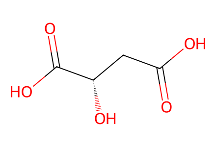
O=C(O)C[C@H](O)C(=O)O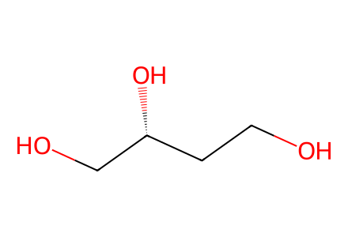
OCC[C@@H](O)CO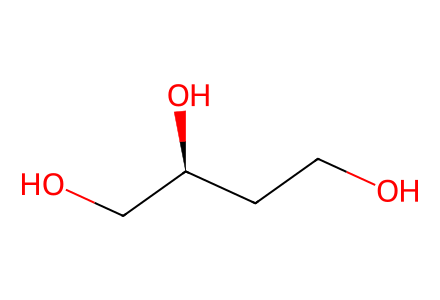
OCC[C@H](O)CO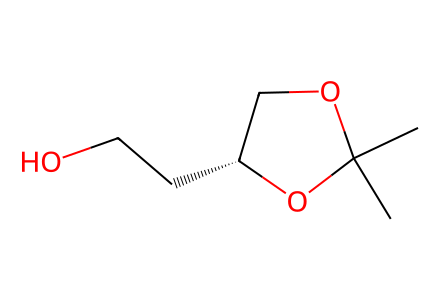
CC1(C)OC[C@@H](CCO)O1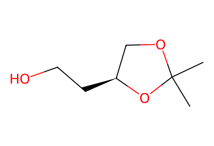
CC1(C)OC[C@H](CCO)O1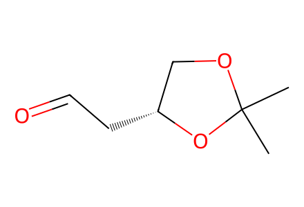
CC1(C)OC[C@@H](CC=O)O1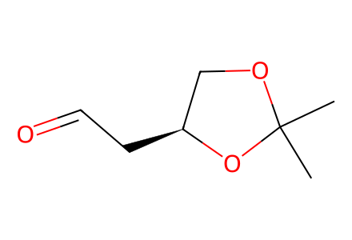
CC1(C)OC[C@H](CC=O)O1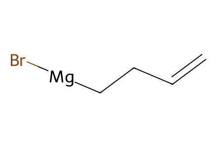
C=CC[CH2][Mg][Br]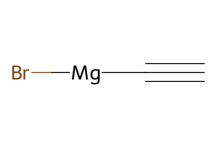
C#[C][Mg][Br]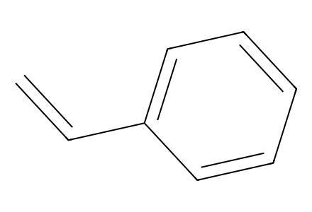
C=Cc1ccccc1
C#CC(=O)OC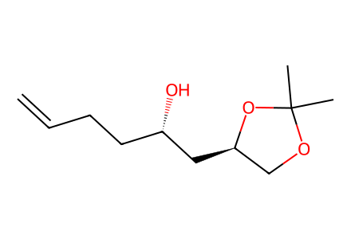
C=CCC[C@H](O)C[C@@H]1COC(C)(C)O1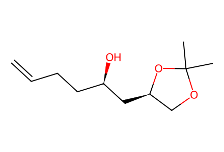
C=CCC[C@@H](O)C[C@@H]1COC(C)(C)O1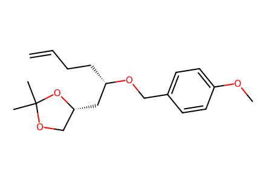
C=CCC[C@@H](C[C@@H]1COC(C)(C)O1)OCc1ccc(OC)cc1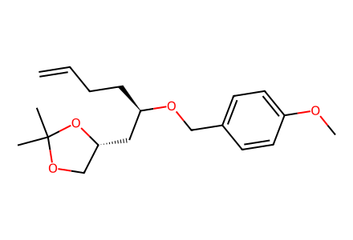
C=CCC[C@H](C[C@@H]1COC(C)(C)O1)OCc1ccc(OC)cc1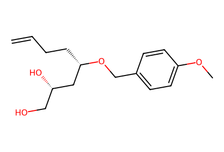
C=CCC[C@@H](C[C@@H](O)CO)OCc1ccc(OC)cc1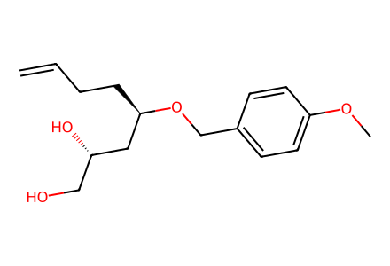
C=CCC[C@H](C[C@@H](O)CO)OCc1ccc(OC)cc1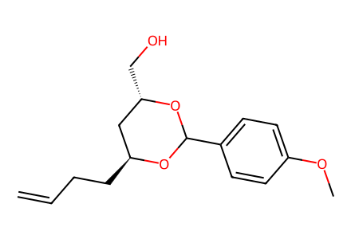
C=CCC[C@H]1C[C@H](CO)OC(c2ccc(OC)cc2)O1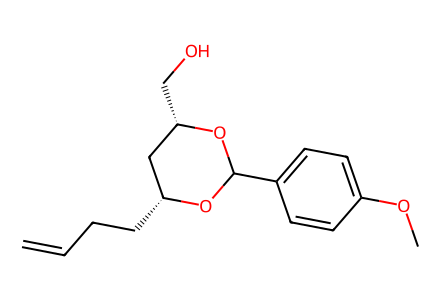
C=CCC[C@@H]1C[C@H](CO)OC(c2ccc(OC)cc2)O1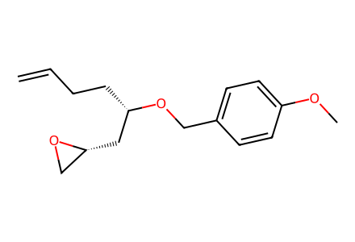
C=CCC[C@@H](C[C@@H]1CO1)OCc1ccc(OC)cc1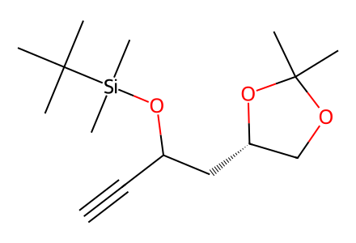
C#CC(C[C@H]1COC(C)(C)O1)O[Si](C)(C)C(C)(C)C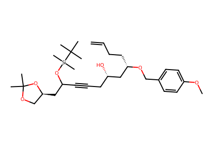
C=CCC[C@@H](C[C@@H](O)CC#CC(C[C@H]1COC(C)(C)O1)O[Si](C)(C)C(C)(C)C)OCc1ccc(OC)cc1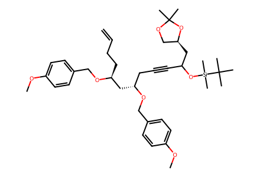
C=CCC[C@@H](C[C@H](CC#CC(C[C@H]1COC(C)(C)O1)O[Si](C)(C)C(C)(C)C)OCc1ccc(OC)cc1)OCc1ccc(OC)cc1C=CCC[C@@H](C[C@H](CC#CC(O)C[C@H]1COC(C)(C)O1)OCc1ccc(OC)cc1)OCc1ccc(OC)cc1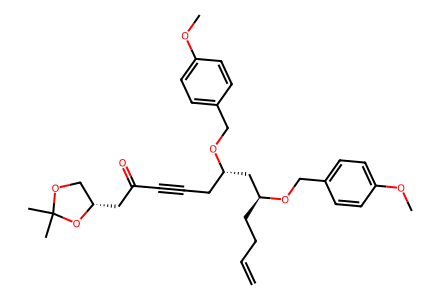
C=CCC[C@@H](C[C@H](CC#CC(=O)C[C@H]1COC(C)(C)O1)OCc1ccc(OC)cc1)OCc1ccc(OC)cc1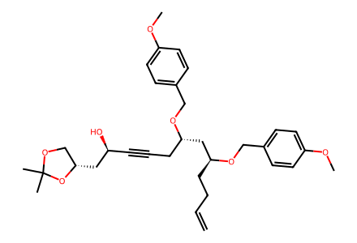
C=CCC[C@@H](C[C@H](CC#C[C@H](O)C[C@H]1COC(C)(C)O1)OCc1ccc(OC)cc1)OCc1ccc(OC)cc1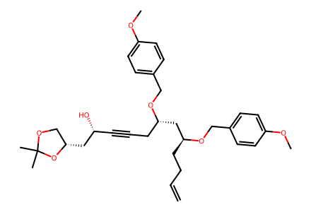
C=CCC[C@@H](C[C@H](CC#C[C@@H](O)C[C@H]1COC(C)(C)O1)OCc1ccc(OC)cc1)OCc1ccc(OC)cc1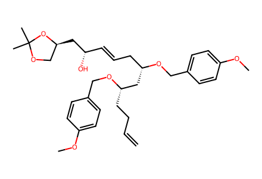
C=CCC[C@@H](C[C@H](C/C=C/[C@H](O)C[C@H]1COC(C)(C)O1)OCc1ccc(OC)cc1)OCc1ccc(OC)cc1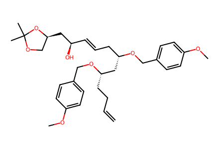
C=CCC[C@@H](C[C@H](C/C=C/[C@@H](O)C[C@H]1COC(C)(C)O1)OCc1ccc(OC)cc1)OCc1ccc(OC)cc1C=CCC[C@@H](C[C@H](C/C=C/[C@@H](C[C@H]1COC(C)(C)O1)OCc1ccc(OC)cc1)OCc1ccc(OC)cc1)OCc1ccc(OC)cc1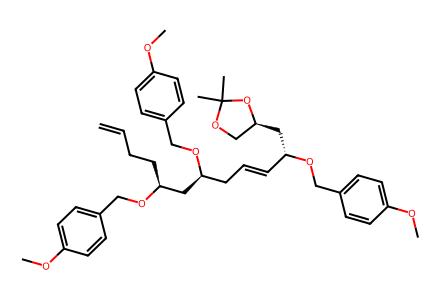
C=CCC[C@@H](C[C@H](C/C=C/[C@H](C[C@H]1COC(C)(C)O1)OCc1ccc(OC)cc1)OCc1ccc(OC)cc1)OCc1ccc(OC)cc1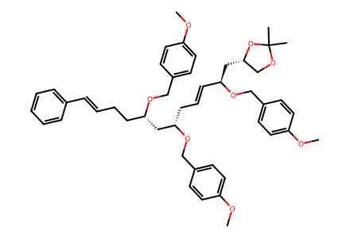
COc1ccc(CO[C@@H](C/C=C/[C@@H](C[C@H]2COC(C)(C)O2)OCc2ccc(OC)cc2)C[C@H](CC/C=C/c2ccccc2)OCc2ccc(OC)cc2)cc1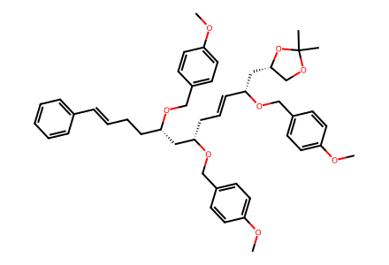
COc1ccc(CO[C@@H](C/C=C/[C@H](C[C@H]2COC(C)(C)O2)OCc2ccc(OC)cc2)C[C@H](CC/C=C/c2ccccc2)OCc2ccc(OC)cc2)cc1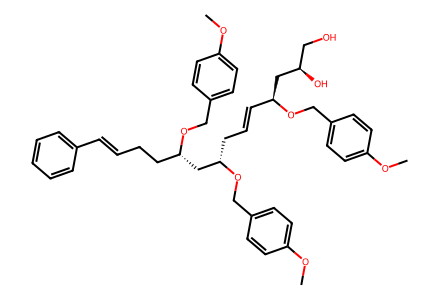
COc1ccc(CO[C@@H](C/C=C/[C@@H](C[C@H](O)CO)OCc2ccc(OC)cc2)C[C@H](CC/C=C/c2ccccc2)OCc2ccc(OC)cc2)cc1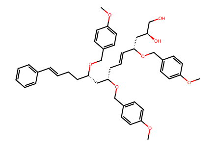
COc1ccc(CO[C@@H](C/C=C/[C@H](C[C@H](O)CO)OCc2ccc(OC)cc2)C[C@H](CC/C=C/c2ccccc2)OCc2ccc(OC)cc2)cc1COc1ccc(CO[C@@H](C/C=C/[C@@H](C[C@H]2CO2)OCc2ccc(OC)cc2)C[C@H](CC/C=C/c2ccccc2)OCc2ccc(OC)cc2)cc1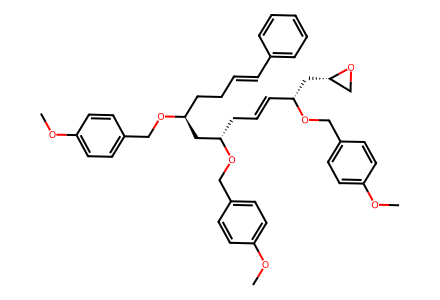
COc1ccc(CO[C@@H](C/C=C/[C@H](C[C@H]2CO2)OCc2ccc(OC)cc2)C[C@H](CC/C=C/c2ccccc2)OCc2ccc(OC)cc2)cc1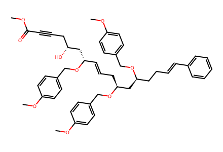
COC(=O)C#CC[C@@H](O)C[C@H](/C=C/C[C@@H](C[C@H](CC/C=C/c1ccccc1)OCc1ccc(OC)cc1)OCc1ccc(OC)cc1)OCc1ccc(OC)cc1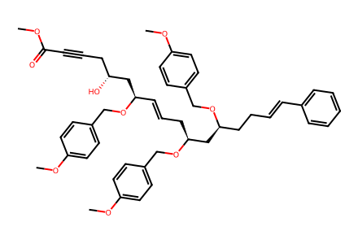
COC(=O)C#CC[C@@H](O)C[C@@H](/C=C/C[C@@H](C[C@H](CC/C=C/c1ccccc1)OCc1ccc(OC)cc1)OCc1ccc(OC)cc1)OCc1ccc(OC)cc1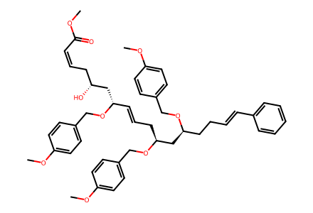
COC(=O)/C=C\C[C@@H](O)C[C@H](/C=C/C[C@@H](C[C@H](CC/C=C/c1ccccc1)OCc1ccc(OC)cc1)OCc1ccc(OC)cc1)OCc1ccc(OC)cc1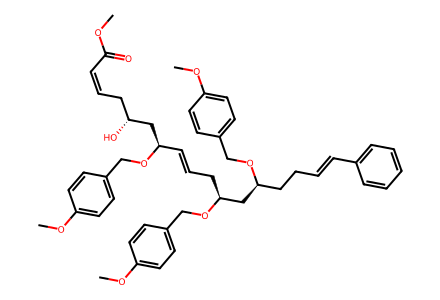
COC(=O)/C=C\C[C@@H](O)C[C@@H](/C=C/C[C@@H](C[C@H](CC/C=C/c1ccccc1)OCc1ccc(OC)cc1)OCc1ccc(OC)cc1)OCc1ccc(OC)cc1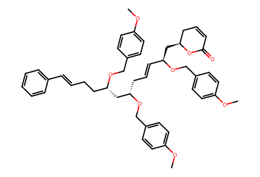
COc1ccc(CO[C@@H](C/C=C/[C@@H](C[C@H]2CC=CC(=O)O2)OCc2ccc(OC)cc2)C[C@H](CC/C=C/c2ccccc2)OCc2ccc(OC)cc2)cc1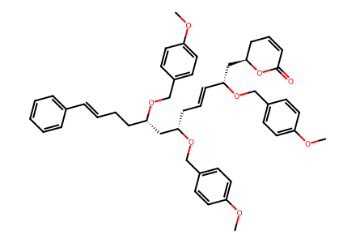
COc1ccc(CO[C@@H](C/C=C/[C@H](C[C@H]2CC=CC(=O)O2)OCc2ccc(OC)cc2)C[C@H](CC/C=C/c2ccccc2)OCc2ccc(OC)cc2)cc1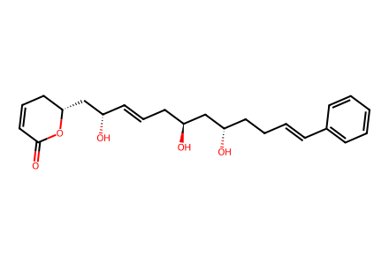
O=C1C=CC[C@H](C[C@@H](O)/C=C/C[C@H](O)C[C@@H](O)CC/C=C/c2ccccc2)O1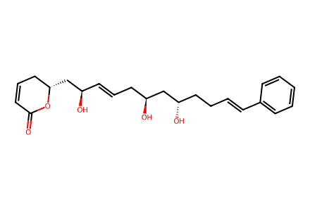
O=C1C=CC[C@H](C[C@H](O)/C=C/C[C@H](O)C[C@@H](O)CC/C=C/c2ccccc2)O1